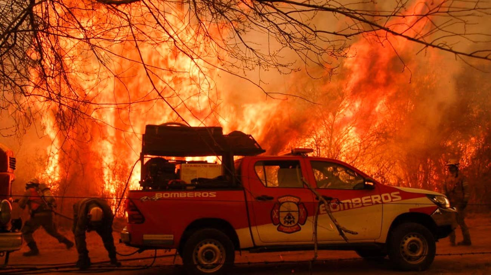

Los Incendios Forestales
Hablando un poco

Año a año Bomberos Voluntarios y Plan Provincial de Manejo del Fuego se capacitan e invierten en equipamento para combatir los Incendios Forestales que azotan nuestra provincia
Como evitar Incendios Forestales
Cuidemos nuestros bosques; reporta incendios forestales
En épocas de calor, una chispa detona en segundos un siniestro difícil de controlar. Esto es porque se reúnen las condiciones principales para intensificar la ocurrencia de incendios en bosques, selvas y otros ecosistemas por la escasez de humedad en el ambiente y las altas concentraciones de material vegetal seco.
Consjeos para prevenir incendios forestales
- Evita arrojar materiales encendidos o inflamables. Evita quemar basura.
- Al encender una fogata, elige un sitio alejado de árboles, pastos y hojarasca, y evita que salten chispas ya que pueden causar un conato de incendio.
- Al término de la fogata, apaga por completo las brasas. Cubre el área de la fogata con tierra o piedras.
- Recoge la basura que generes y llévala contigo para depositarla en un lugar apropiado.
- Evita fumar en bosques o pastizales.
- Evita participar o fomentar eventos con globos de cantoya, ya que representan un alto riesgo para la generación de incendios forestales
¿Qué debes hacer si te encuentras en un incendio forestal?
- En caso de encontrarte en las proximidades de un incendio, aléjate por las zonas laterales del fuego y más desprovistas de vegetación. Recuerda que un cambio en la dirección del viento puede hacer que el fuego rodee a quienes transitan por el lugar. Por lo tanto, procura caminar siempre en sentido contrario a la dirección del viento.
- Evita ir hacia cañadas, barrancos u hondonadas, y por ningún motivo intentes escapar cuesta arriba, especialmente cuando el fuego asciende por la ladera.
Nuevo Indice de Peligro de Incendios Forestales (FWI) para la Provincia de Cordoba
Compartimos el Índice de Peligro de Incendios (FWI) para el 10 de agosto. Elaborado por @HidroCordoba
— Observatorio Hidro-meteorológico de Córdoba (@HidroCordoba) August 10, 2022
para la Secretaría de Gestión de Riesgos Climáticos, Catástrofes y Protección Civil de la provincia de Córdoba. Riesgo alto en casi toda la provincia, extremo en el Nor Oeste. pic.twitter.com/oB9TmSmVgy